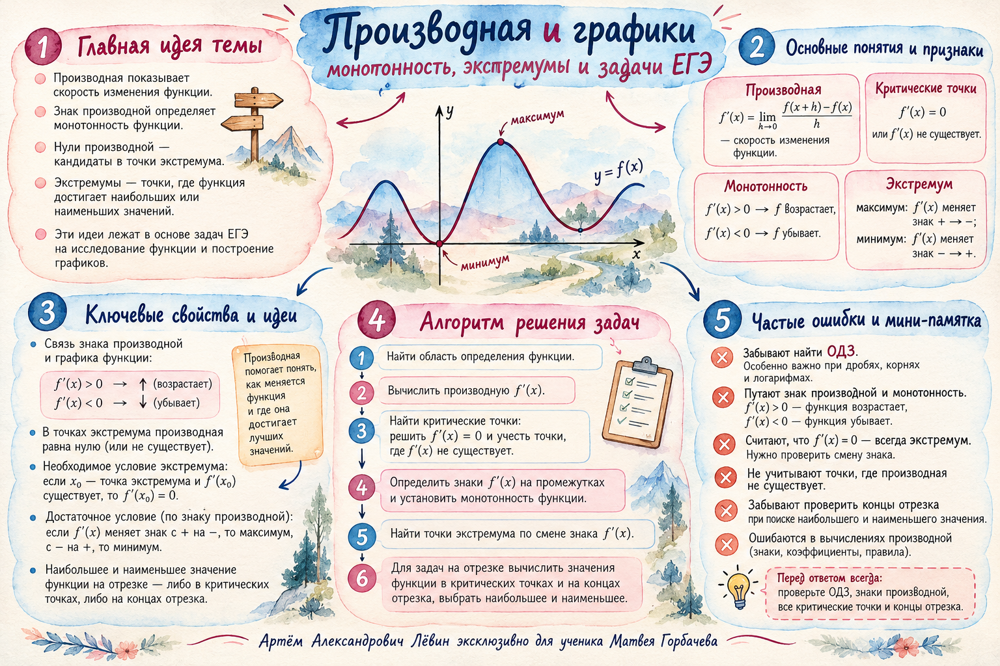

Дан график y = f(x)
Читайте его слева направо: поднимается — функция возрастает, опускается — убывает. Горизонтальная касательная в гладком экстремуме означает f′(x) = 0.
Математика · ЕГЭ · 25 октября 2026
Сначала определите, чей график изображён. Затем используйте знак производной, чтобы найти интервалы монотонности, точки экстремума и требуемые абсциссы.
Читайте его слева направо: поднимается — функция возрастает, опускается — убывает. Горизонтальная касательная в гладком экстремуме означает f′(x) = 0.
Смотрите, где он находится относительно оси Ox. Выше оси — функция возрастает; ниже — убывает. Смена знака подсказывает характер экстремума.
Эти правила работают на промежутках, где производная имеет указанный знак.
Даже если график f′ опускается, сама функция может возрастать — пока f′(x) > 0. Условие задачи всегда начинается с ответа на вопрос: «Чей график дан?»
Между −1 и 1 функция убывает.
Под осью Ox именно там, где функция убывает.
| Поведение f′ около x₀ | Поведение f | Вывод |
|---|---|---|
| + → − | Рост сменяется убыванием | Точка максимума |
| − → + | Убывание сменяется ростом | Точка минимума |
| + → + или − → − | Направление сохраняется | Экстремума по смене знака нет |
Стационарная точка удовлетворяет f′(x₀) = 0. У дифференцируемой функции во внутренней точке экстремума производная равна нулю, однако обратное неверно: функция x³ имеет f′(0) = 0 без экстремума. В точке излома производная может не существовать.
Проходите этапы последовательно. Нажимайте «Дальше», чтобы выделить текущий шаг.
Эти четыре вопроса удобно кратко записывать в первых домашних заданиях. На экзамене обычно достаточно числового ответа.
Если f′(x) < 0 на интервале (−3; 2), допустимые целые абсциссы — −2, −1, 0, 1. Их количество равно 4, сумма равна −2, а длина промежутка равна 5.
Следите за границами. Нули производной в строгое неравенство не входят; выколотые точки исключаются. Значение y при подсчёте целых x роли не играет.
Если функция непрерывна на [a; b] и производная положительна внутри, минимум достигается на левом конце, максимум — на правом. При отрицательной производной наоборот.
Пример: на отрезке [3; 8] производная положительна. Значит, наименьшее значение достигается при x = 3. Если просят само значение f(3), одних данных о знаке производной недостаточно.
Когда знак производной меняется внутри отрезка, следует сравнить значения функции на концах и в критических точках, если эти значения известны.
Задания и графики соответствуют PDF-чек-листу. Впишите числовые ответы и запустите проверку. Сначала решите самостоятельно; полный ключ размещён ниже.
Особенно проверьте № 6: подходят x = −4, 2, 3, их сумма равна 1.
